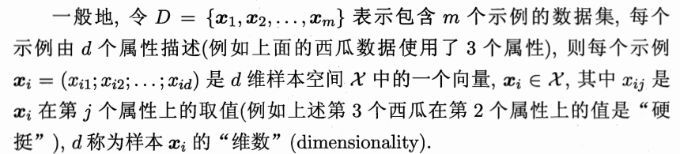
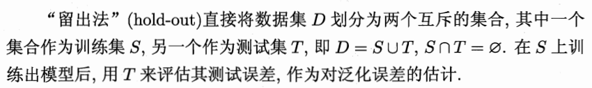
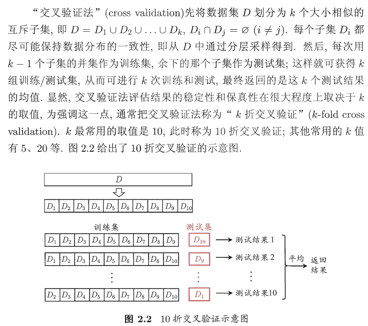
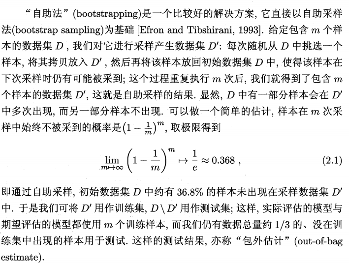
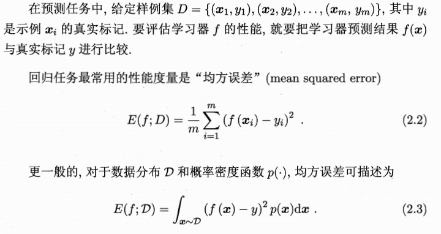
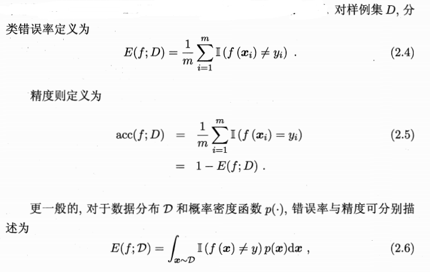
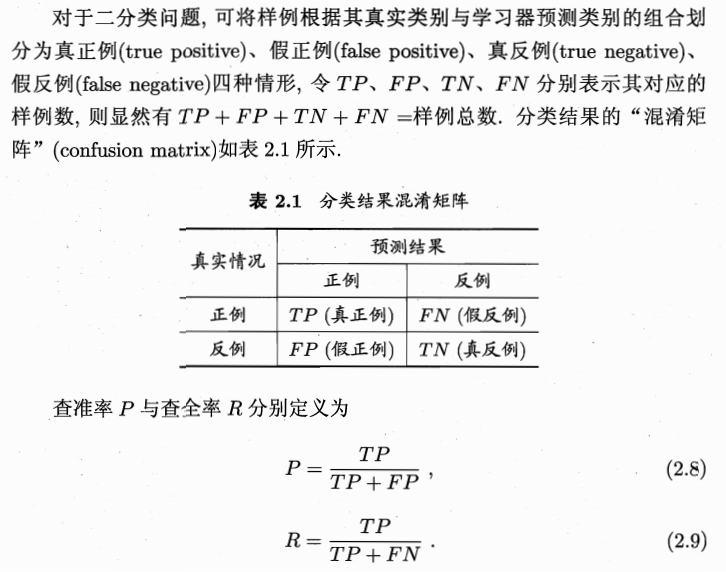
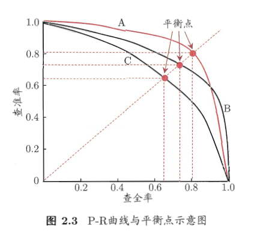
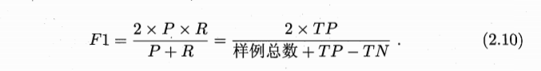
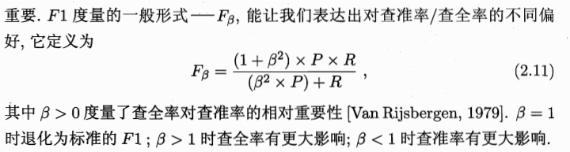

第一章 绪论
1.1 引言
机器学习致力于研究如何通过计算的手段，利用经验来改善系统自身的性能.在计算机系统中，“经验”通常以 “数据”形式存在，因此，机器学习所研究的主要内容，是关于在计算机上从数据中产生“模型 “ （model）的算法，即 “学习算法”（learning algorithm）. 有了学习算法，我 们把经验数据提供给它，它就能基于这些数据产生模型；在面对新的情况时（例如看到一个没剖开的西瓜），模型会给我们提供相应的判断（例如好瓜）。
1.2 基本术语
数据集(data set)
示例、样本(instance,sample)
属性、特征(attribute,feature)
属性值(attribute value)
样本空间(sample space)
特征向量(feature vector)

离散值——分类 (classification)
连续值——回归(regression)
两个类别——二分类
多个类别——多分类
1.3 假设空间
归纳(induction)与演绎(deduction)是科学推理的两大基本手段.前者是从 特殊到一般的“泛化”(generalization)过程，即从具体的事实归结出一般性规 律；后者则是从一般到特殊的“特化”(specialization)过程，即从基础原理推演 出具体状况.例如，在数学公理系统中，基于一组公理和推理规则推导出与之 相洽的定理，这是演绎；而 “从样例中学习”显然是一个归纳的过程，因此亦称 “归纳学习 ”(inductive learning).
第二章 模型评估与选择
2.1 经验误差与过拟合
通常我们把分类错误的样本数占样本总数的比例称为“错误率”(error rate ),即如果在m个样本中有a 个样本分类错误，则错误率E = a/m ;相应的, 1-a /m 称为 “精度”(accuracy),即 “精度= 1-错误率”.更一般地,我们把学习器的实际预测输出与样本的真实输出之间的差异称为“误差”(error), 学习器在训练集上的误差称为 “训练误差 ”(training error)或 “经验误差”(empirical error),在新样本上的误差称为 “泛化误差”(generalization error).
2.2 评估方法
通常，我们可通过实验测试来对学习器的泛化误差进行评估并进而做出选 择.为此 需使用一个“测试集”(testing set)来测试学习器对新样本的判别能力，然后以测试集上的“测试误差”(testing error)作为泛化误差的近似.通常，我们假设测试样本也是从样本真实分布中独立同分布采样而得.但需注意的是，测试集应该尽可能与训练集互斥，即测试样本尽量不在训练集中出现、未在训练过程中使用过.
2.2.1 留出法

2.2.2 交叉验证法

2.2.3 自助法

2.2.4 调参与最终模型
大多数学习算法都有些参数(parameter)需要设定，参数配置不同，学得模型的性能往往有显著差别.因此,在进行模型评估与选择时，除了要对适用学习算法进行选择，还需对算法参数进行设定，这就是通常所说的“参数调节”或简称 “调参 “ (parameter tuning).
2.3 性能度量
对学习器的泛化性能进行评估，不仅需要有效可行的实验估计方法，还需 要有衡量模型泛化能力的评价标准，这就是性能度量(performance measure).性能度量反映了任务需求，在对比不同模型的能力时，使用不同的性能度量往往会导致不同的评判结果；这意味着模型的“好坏”是相对的，什么样的模型是好的，不仅取决于算法和数据，还决定于任务需求.

2.3.1 错误率与精度

2.3.2 查准率、查全率与F1



